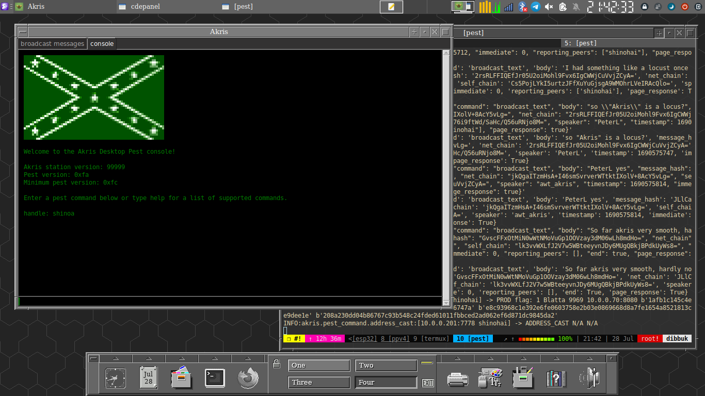

Building awt's akris pestnet client on Gentoo
awt recently released a new station and client library dubbed "akris" for use with the pestnet protocol. Detailed instructions for installing it using various methods are detailed on alethepedia, but here I am documenting how I built on Gentoo in a virtual environment using Python 3.11 and esthlos-v.
I started by creating the python virtual environment in my /devel/ directory, making sure I specified my py interpreter since akris-desktop requires Python >= 3.11. Then we switch to the newly created directory and activate the venv.
python3.11 -m venv pest
cd pest/ && source bin/activate
Now we make a directory for akris and grab the vpatches and seals:
mkdir -p akris && cd $_
mkdir -p patches/ seals/ wot/
wget http://v.alethepedia.com/akris/akris-genesis-99999.vpatch -P patches/
wget http://v.alethepedia.com/akris/akris-genesis-99999.vpatch.thimbronion.sig -P seals/
wget http://wot.deedbot.org/57512CE78CF08BB25FE277A4B16136257FB8FBDD.asc -O wot/thimbrion.asc
After obtaining the needed ingredients, we can now press using V:
v press akris-genesis-99999.vpatch .
When the press completes successfully, we can install the akris station library to our venv using pip:
pip install -e .
Now we can move back to the root 'pest' directory and make a new directory to install the desktop components in:
cd ~/devel/pest
mkdir -p gui && cd $_
mkdir -p patches/ seals/ wot/
Grab the patches and seals much like we did above for the station library:
wget http://v.alethepedia.com/akris_desktop/akris-desktop-genesis-99999.vpatch -P patches/
wget http://v.alethepedia.com/akris_desktop/akris-desktop-genesis-99999.vpatch.thimbronion.sig -P seals/
wget http://wot.deedbot.org/57512CE78CF08BB25FE277A4B16136257FB8FBDD.asc -O wot/thimbrion.asc
Press it, again using `V`:
v press akris-desktop-genesis-99999 .
akris-desktop requires tk, so you might need to install it from portage:
emerge -av dev-python/tk
Once that completes, you will have to manually install icons and imagery for the gui client, since `vdiff` does not handle binary files:
cd akris-desktop/
wget http://v.alethepedia.com/akris_desktop/images.tar.gz
wget http://v.alethepedia.com/akris_desktop/images.tar.gz.thimbronion.sig
Verify the signatures before untarring, because you aren't a heathen:
gpg-1.4.10 --verify images.tar.gz.thimbronion.sig images.tar.gz
gpg: Signature made Tue Jul 25 10:54:59 2023 EDT
gpg: using RSA key 0xB16136257FB8FBDD
gpg: Good signature from "Thimbronion
Now we have verified sigs, decompress and clean up:
tar zxf images.tar.gz
rm -f images.tar.gz images.tar.gz.thimbronion.sig
Then install akris-desktop using pip:
cd ..
pip install -e .
Now we're almost done. Go back to the root pest directory:
cd ~/devel/pest
Create a little start script called "start-gui" for ease of use containing the following:
#!/usr/bin/env bash
python gui/bin/main.py
Now you can easily start your pest station and client from the virtual environment by running `./start-gui`. If all goes well, you'll be greeted with a screen like this:

For more information, visit alethepedia: akris and akris-desktop.